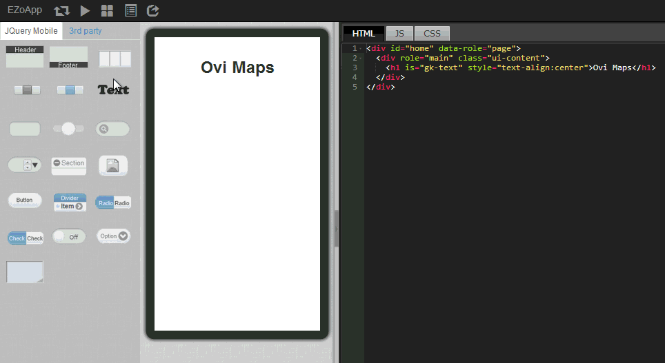

Page layout is often what gives developers the worst headache when developing an app. Sometimes adjusting layout can cost over half of the development time. As the saying goes, "Devil is in the details." Layout looks easy, but it could cause great trouble for engineers. Therefore, EZoApp provides a WYSIWYG (what-you-see-is-what -you-get) design tool. Simply by using the method of drag-and-drop and by adjusting numbers, together with the familiar and simple CSS syntax, developers can create a variety of layouts easily and focus their efforts on other design details.
The EZoApp hands-on tutorial below will start with the simple layout practice. We believe that everyone can become a layout master if they really want to!
Link of example:
Basic component hands-on practice - basic grid layout
Click the link to start the EZoApp's grid layout example. As you go through the example, follow the instructions and actually do it. It will help you learn to use EZoApp faster!

First, we will add texts. It is easy to add texts. Just drag the gk-text component on the left side into the editing area to create a text block. Then, just change the texts and use CSS to align them and you are done!
<h1 is="gk-text" style="text-align:center;">Ovi Maps</h1>

After texts are quickly added, we will add grid components. Similarly, drag the grid component from the left side into the editing area to generate a grid with a default size of 1x3. If we want to set up a 3x3 grid, simply drag three times to complete it. After each grid is dragged into the editing area, the corresponding HTML code as shown below will be generated. class="ui-grid-b" is the default style of jQuery Mobile representing a 1x3 grid.
<div class="ui-grid-b" style="height:95px;">
<div class="ui-block-a" style="height:100%;"></div>
<div class="ui-block-b" style="height:100%;"></div>
<div class="ui-block-c" style="height:100%;"></div>
</div>

After a grid is added, we only need to use the 3rd party component "image" in the corresponding column to easily add an
image component, or we can also easily add an image by directly typing in the HTML syntax for image. The program code for adding images is provided below as a reference.
A side note: If you add your own program code, you can add
is="dragable" in the tag of the image to turn the image into an EZoApp's dragable image component. Isn't this quite convenient?
<div class="ui-grid-b" style="height:95px">
<div class="ui-block-a" style="height:100%">
<img is="dragable" src="img url"/>
<h5 is="gk-text" style="text-align:center;">title</h5>
</div> <div class="ui-block-b" style="height:100%">
<img is="dragable" src="img url"/>
<h5 is="gk-text" style="text-align:center;">title</h5>
</div>
<div class="ui-block-c" style="height:100%">
<img is="dragable" src="img url"/>
<h5 is="gk-text" style="text-align:center;">title</h5>
</div>
</div>
After images are added, we want to create a footer. It is quite simple to add a footer. You can easily create a footer with black background by dragging a footer component into the editing area, then, change its style in the attribute panel.

Lastly, we can create buttons on the left and right sides of the footer by dragging a
button component above the footer in the editing area. Then, similarly, change the icons and texts of the buttons in the attribute panel. A footer with buttons is quickly created!
As expected, in addition to changing the attributes of the buttons in the attribute panel, since button component is also built upon one of the basic components of jQuery Mobile, we can also use the program code listed below to change the style of the button, thus adding more of a sense of purposeful design to the overall screen.
<div data-role="footer" data-position="fixed" data-theme="b">
<h3>InfoChamp</h3>
<a class="ui-btn ui-btn-left ui-btn-icon-left ui-icon-gear ui-btn-icon-notext ui-corner-all" style="margin-top:0;"></a>
<a class="ui-btn ui-btn-right ui-btn-icon-left ui-icon-delete ui-btn-icon-notext ui-corner-all" style="margin-top:0;"></a>
</div>

Link of example:
Basic component hands-on practice - basic grid layout